Bière de Namur
Houppe
« Bière de Namur », dit l'étiquette : servie en bouteille avec son verre à pied, sur les sous-bocks La Chouffe.
33 cl4,8 %
Rue de Marchovelette 15 · Namur
Bières belges, cuisine de brasserie et terrasse sur les pavés, derrière une devanture Art déco et des murs couverts de plaques émaillées.
Ouvert 7 jours sur 7
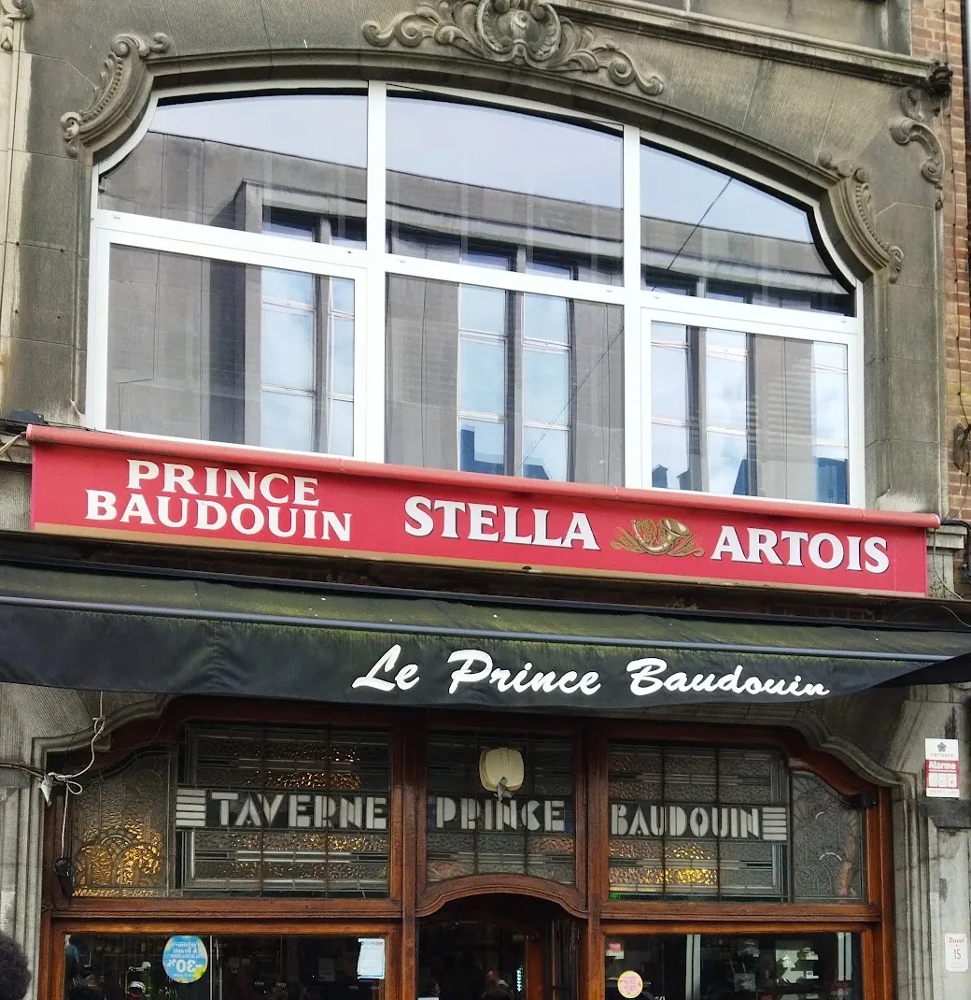
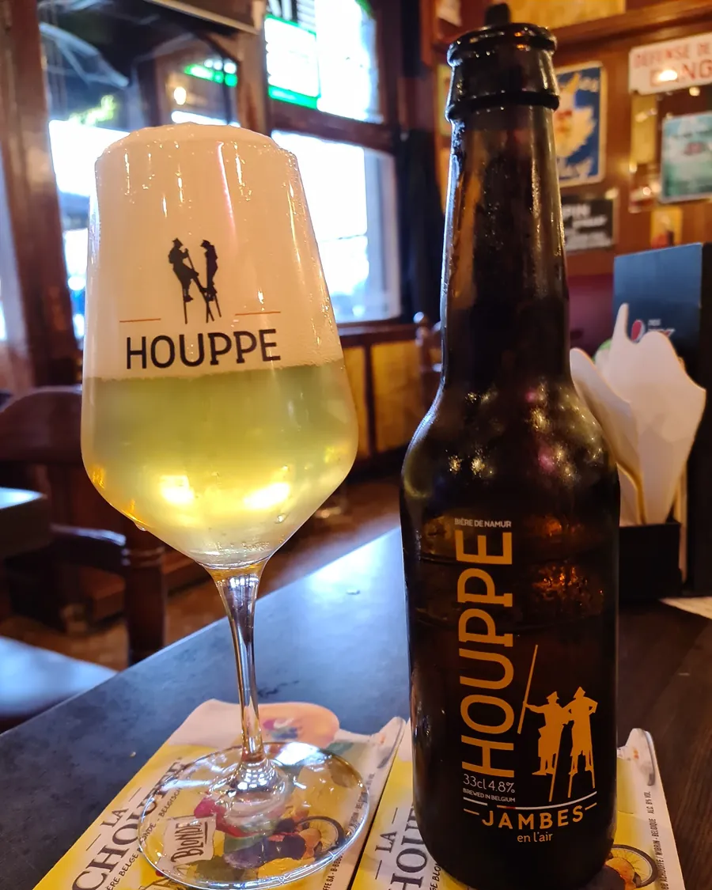
La taverne
Boiseries, banquettes rouges, suspensions blanches et comptoir au fond de la salle : le Prince Baudouin sert bières belges et plats de brasserie, de 8 h à 20 h en semaine et dès 11 h le dimanche. Aux beaux jours, la terrasse s'installe sur les pavés de la rue de Marchovelette.
« […] Un large choix de bières à des prix corrects, d'accord nous somme en Belgique mais ce n'est pas le cas partout. […] »Noss B., avis Google, de passage à Namur
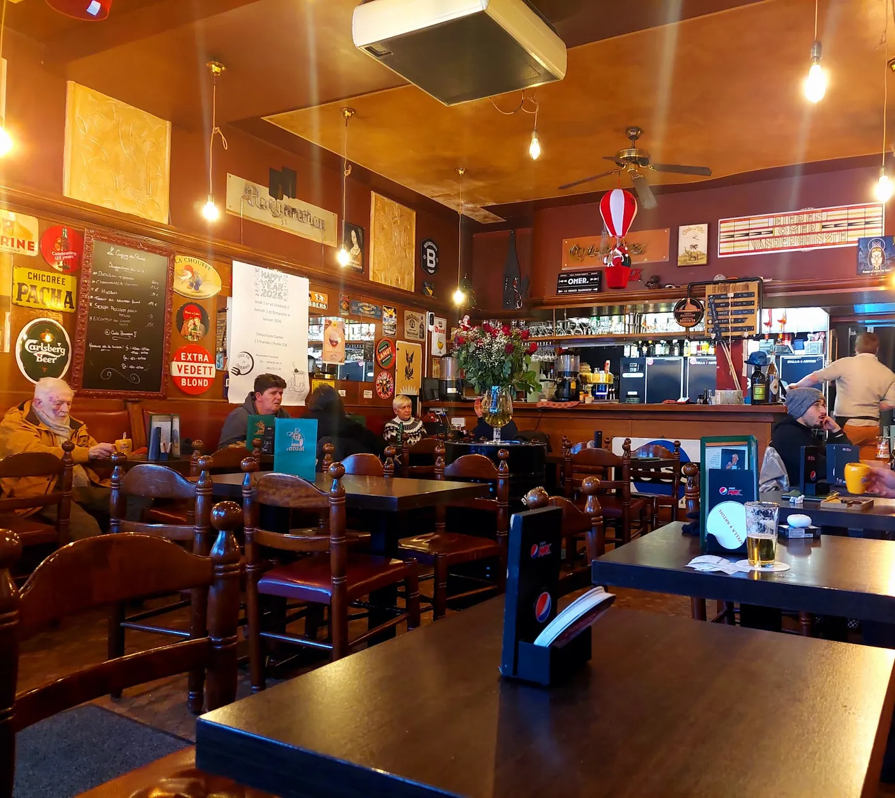
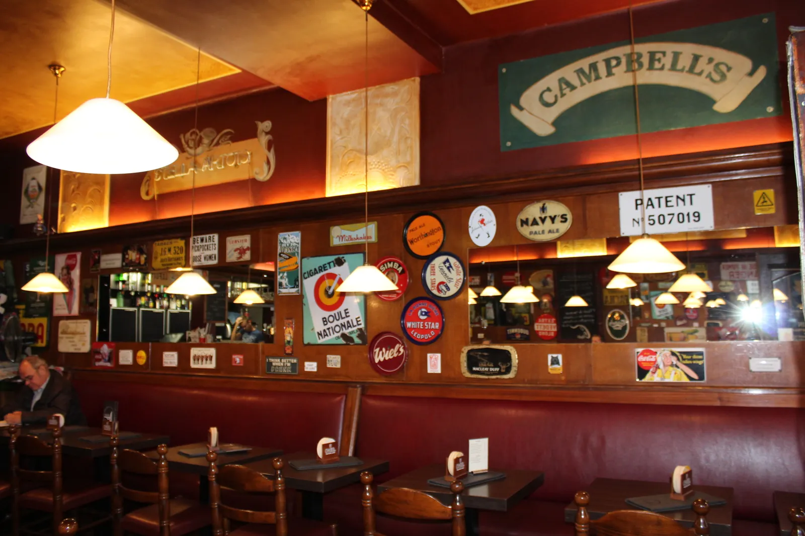
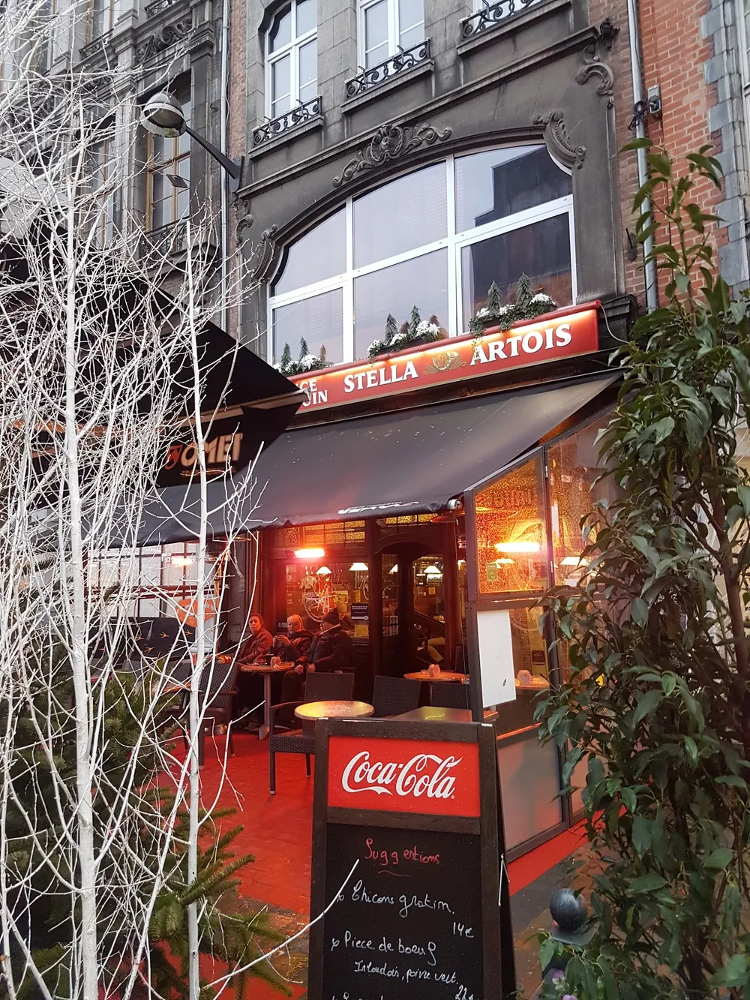
Le décor
Simba du Katanga, White Star de Léopold, Wiel's, Boule Nationale : les murs de la taverne sont couverts de plaques et de plateaux de brasserie. Touchez un numéro pour lire la plaque.
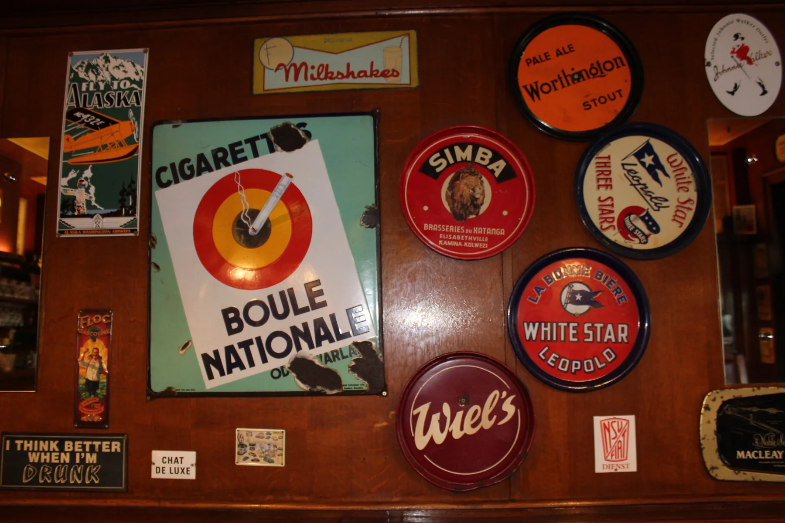
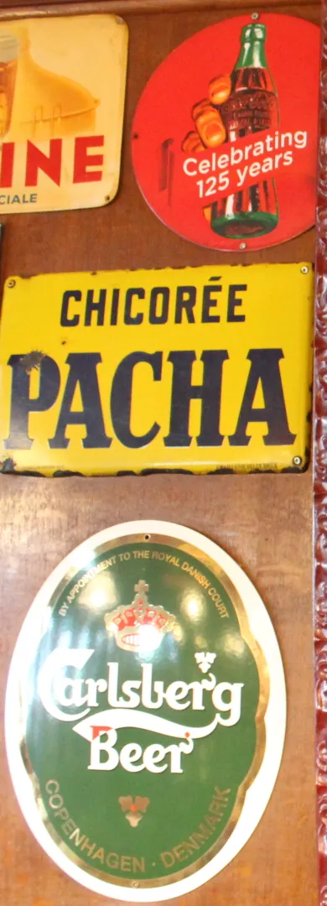
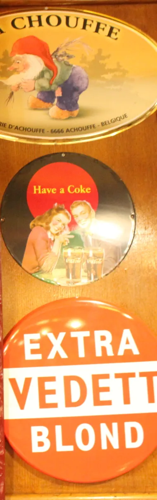
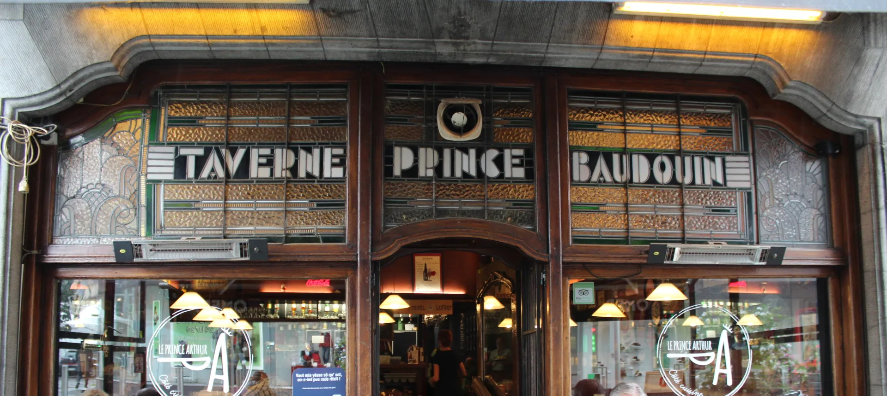
Au-dessus des vitrines, le vitrail Art déco écrit en lettres blanches sur verre doré : Taverne · Prince · Baudouin. C'est par là qu'on entre.
Au comptoir
Une bière de Namur, les abbayes au verre calice, la bière en chope sur la terrasse. Et à côté du verre, les cubes de fromage.
« Bière de Namur », dit l'étiquette : servie en bouteille avec son verre à pied, sur les sous-bocks La Chouffe.
33 cl4,8 %
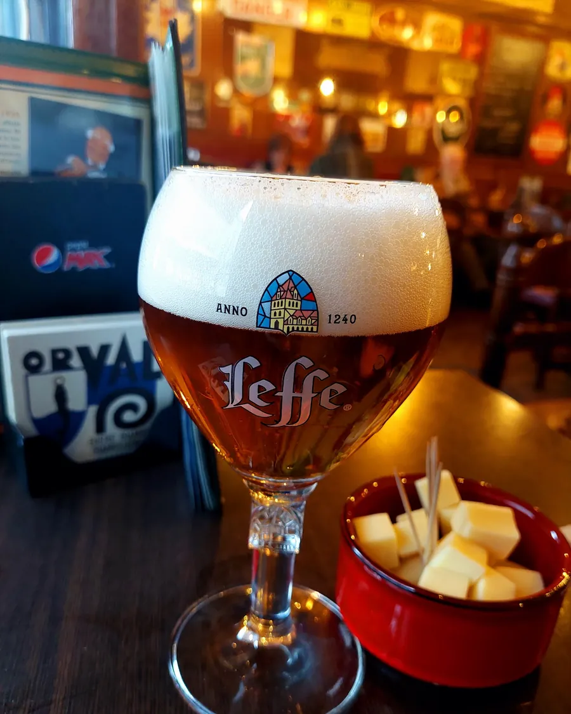
Au verre calice, avec un ramequin de cubes de fromage piqués de cure-dents.
Verre caliceFromage
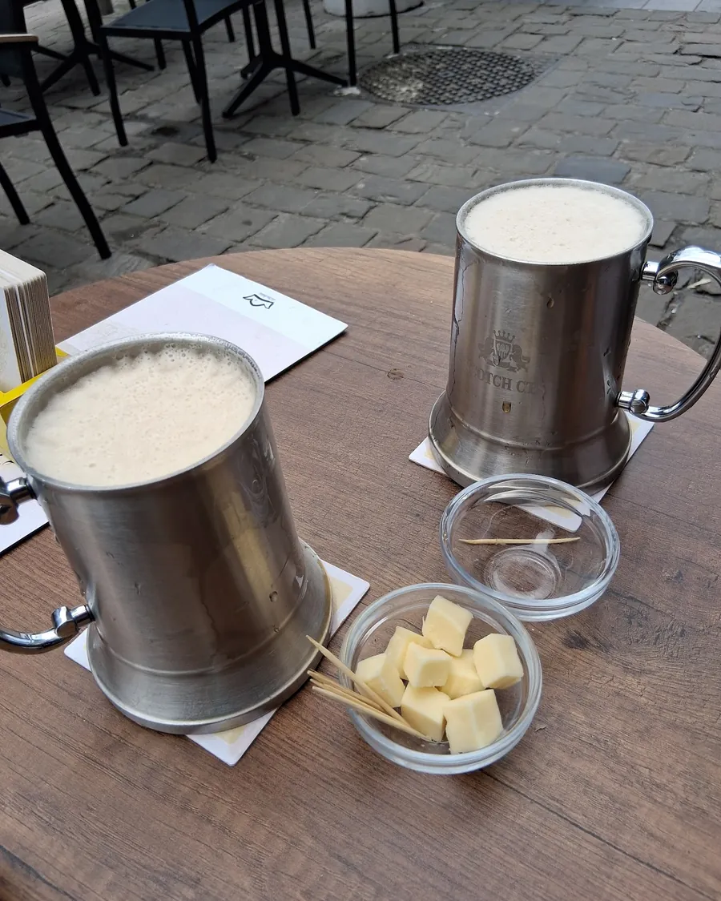
Sur les tables rondes de la terrasse, deux chopes en métal et des cubes de fromage.
TerrasseChopes
Faites glisser pour voir les bières
« […] Un large choix de bières à des prix corrects […] »
Noss B., avis GoogleEn cuisine
Une cuisine de brasserie, simple et copieuse, écrite à la craie. Voici des suggestions lues sur l'ardoise.
Relevé sur deux ardoises photographiées par des clients. Les suggestions changent : celles du jour sont à l'ardoise, en salle et sur le trottoir.
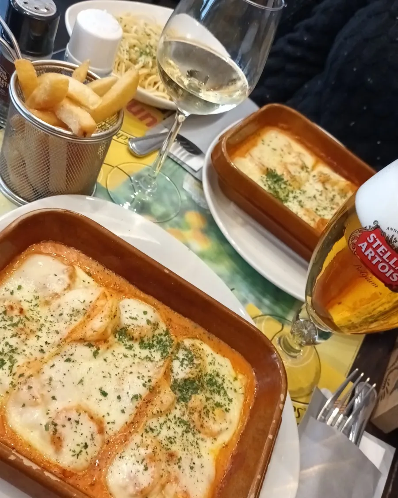
« Cuisine savoureuse et copieuse, service sympathique et attentif. […] »Virginie, avis Google
Réserver
Le jour, l'heure, le nombre de couverts : la demande se fait en trente secondes, même quand la salle est pleine et que personne ne peut décrocher.
Avis
Ce que les clients écrivent sur Google après un verre ou un repas au Prince Baudouin.
Horaires et accès
| lundi | 8 h – 20 h |
|---|---|
| mardi | 8 h – 20 h |
| mercredi | 8 h – 20 h |
| jeudi | 8 h – 20 h |
| vendredi | 8 h – 20 h |
| samedi | 8 h – 20 h |
| dimanche | 11 h – 20 h |
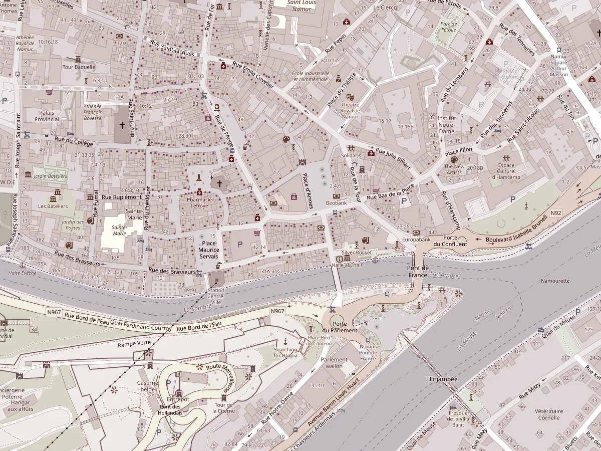
Itinéraire © OpenStreetMapLa taverne ouvre à 8 h du lundi au samedi, à 11 h le dimanche. Café ou thé à la menthe en terrasse ou en salle.
Tables rondes et chaises tressées devant le vitrail, sur les pavés de la rue de Marchovelette.